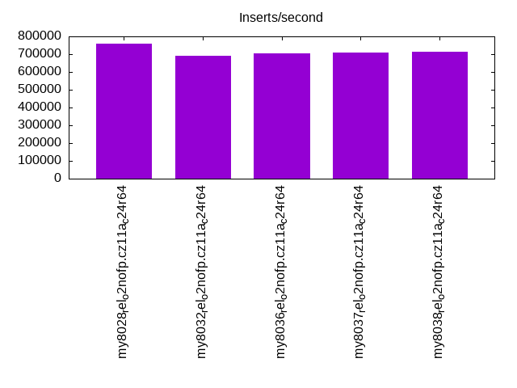
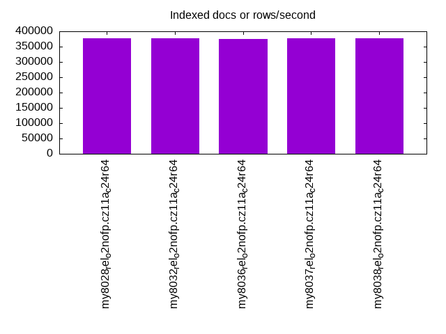
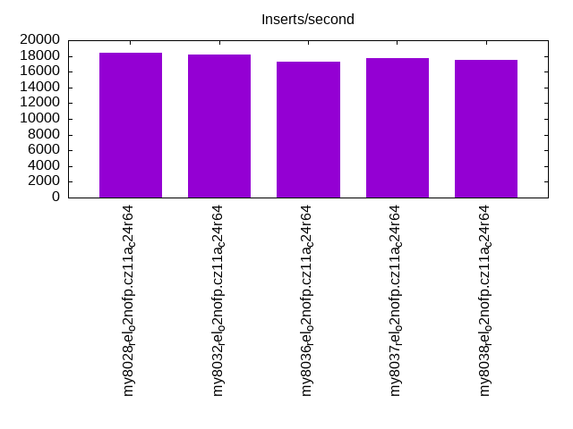
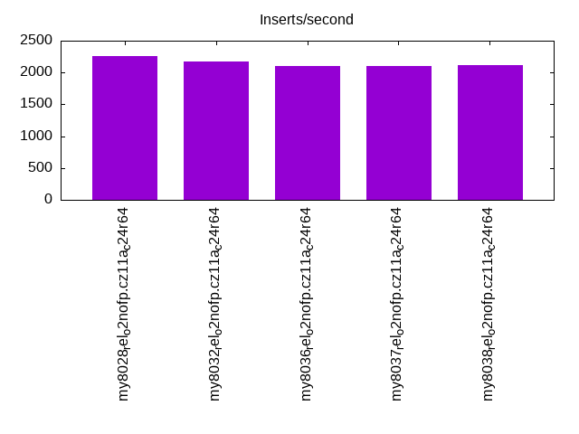
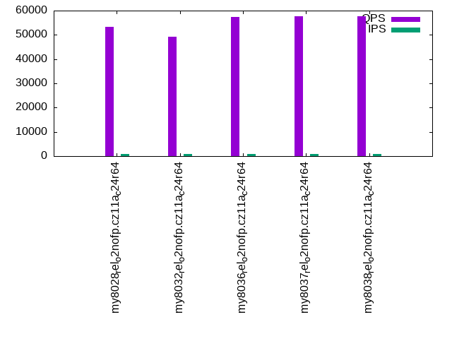
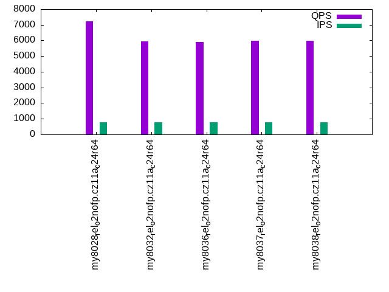
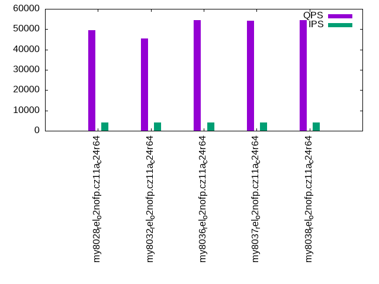
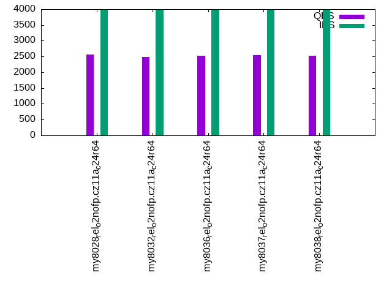
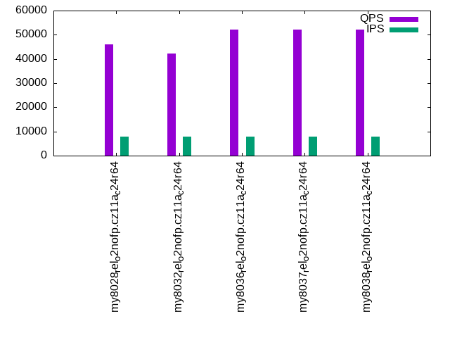
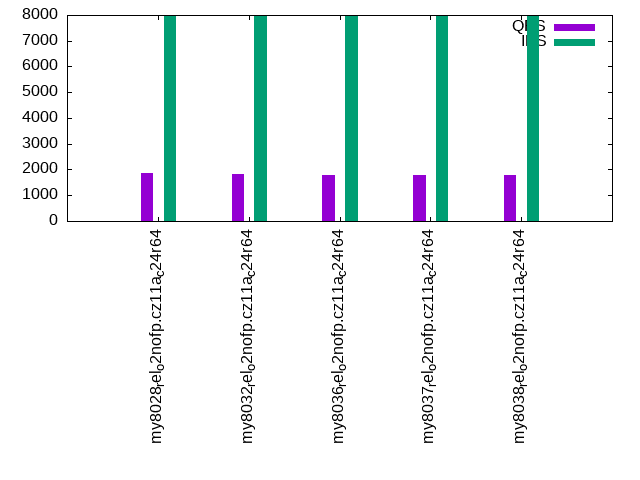

This is a report for the insert benchmark with 1024M docs and 8 client(s). It is generated by scripts (bash, awk, sed) and Tufte might not be impressed. An overview of the insert benchmark is here and a short update is here. Below, by DBMS, I mean DBMS+version.config. An example is my8020.c10b40 where my means MySQL, 8020 is version 8.0.20 and c10b40 is the name for the configuration file.
The test server has is a c2d-standard-30 with HT off, 16 cores, 64G RAM, Ubuntu 22.04 and ext4 using SW RAID 0 and 2 NVMe devices. The benchmark was run with 8 clients and there were 1 or 3 connections per client (1 for queries or inserts without rate limits, 1+1 for rate limited inserts+deletes). It uses 8 table with a table per client. It loads 128M rows per table without secondary indexes, creates 3 secondary indexes per table, then inserts 4m+1m rows per table with a delete per insert to avoid growing the table. It then does 6 read+write tests for 1800s each that do queries as fast as possible with 100,100,500,500,1000,1000 inserts/s and the same for deletes/s per client concurrent with the queries. The database is larger than memory. Clients and the DBMS share one server. The per-database configs are in the per-database subdirectories here.
The tested DBMS are:
The numbers are inserts/s for l.i0, l.i1 and l.i2, indexed docs (or rows) /s for l.x and queries/s for qr100, qp100 thru qr1000, qp1000" The values are the average rate over the entire test for inserts (IPS) and queries (QPS). The range of values for IPS and QPS is split into 3 parts: bottom 25%, middle 50%, top 25%. Values in the bottom 25% have a red background, values in the top 25% have a green background and values in the middle have no color. A gray background is used for values that can be ignored because the DBMS did not sustain the target insert rate. Red backgrounds are not used when the minimum value is within 80% of the max value.
| dbms | l.i0 | l.x | l.i1 | l.i2 | qr100 | qp100 | qr500 | qp500 | qr1000 | qp1000 |
|---|---|---|---|---|---|---|---|---|---|---|
| my8028_rel_o2nofp.cz11a_c24r64 | 759081 | 377999 | 18412 | 2259 | 53400 | 7242 | 49614 | 2566 | 46156 | 1853 |
| my8032_rel_o2nofp.cz11a_c24r64 | 689098 | 377581 | 18151 | 2172 | 49108 | 5927 | 45546 | 2476 | 42216 | 1831 |
| my8036_rel_o2nofp.cz11a_c24r64 | 703780 | 375642 | 17307 | 2107 | 57510 | 5909 | 54451 | 2521 | 52149 | 1767 |
| my8037_rel_o2nofp.cz11a_c24r64 | 708650 | 377720 | 17689 | 2096 | 57680 | 5978 | 54229 | 2539 | 52174 | 1788 |
| my8038_rel_o2nofp.cz11a_c24r64 | 712100 | 377303 | 17515 | 2115 | 57602 | 5990 | 54518 | 2531 | 52259 | 1782 |
This table has relative throughput, throughput for the DBMS relative to the DBMS in the first line, using the absolute throughput from the previous table. Values less than 0.95 have a yellow background. Values greater than 1.05 have a blue background.
| dbms | l.i0 | l.x | l.i1 | l.i2 | qr100 | qp100 | qr500 | qp500 | qr1000 | qp1000 |
|---|---|---|---|---|---|---|---|---|---|---|
| my8028_rel_o2nofp.cz11a_c24r64 | 1.00 | 1.00 | 1.00 | 1.00 | 1.00 | 1.00 | 1.00 | 1.00 | 1.00 | 1.00 |
| my8032_rel_o2nofp.cz11a_c24r64 | 0.91 | 1.00 | 0.99 | 0.96 | 0.92 | 0.82 | 0.92 | 0.96 | 0.91 | 0.99 |
| my8036_rel_o2nofp.cz11a_c24r64 | 0.93 | 0.99 | 0.94 | 0.93 | 1.08 | 0.82 | 1.10 | 0.98 | 1.13 | 0.95 |
| my8037_rel_o2nofp.cz11a_c24r64 | 0.93 | 1.00 | 0.96 | 0.93 | 1.08 | 0.83 | 1.09 | 0.99 | 1.13 | 0.96 |
| my8038_rel_o2nofp.cz11a_c24r64 | 0.94 | 1.00 | 0.95 | 0.94 | 1.08 | 0.83 | 1.10 | 0.99 | 1.13 | 0.96 |
This lists the average rate of inserts/s for the tests that do inserts concurrent with queries. For such tests the query rate is listed in the table above. The read+write tests are setup so that the insert rate should match the target rate every second. Cells that are not at least 95% of the target have a red background to indicate a failure to satisfy the target.
| dbms | qr100.L1 | qp100.L2 | qr500.L3 | qp500.L4 | qr1000.L5 | qp1000.L6 |
|---|---|---|---|---|---|---|
| my8028_rel_o2nofp.cz11a_c24r64 | 796 | 796 | 3980 | 3978 | 7965 | 7965 |
| my8032_rel_o2nofp.cz11a_c24r64 | 796 | 796 | 3980 | 3978 | 7960 | 7960 |
| my8036_rel_o2nofp.cz11a_c24r64 | 796 | 796 | 3980 | 3980 | 7960 | 7965 |
| my8037_rel_o2nofp.cz11a_c24r64 | 796 | 796 | 3980 | 3980 | 7965 | 7965 |
| my8038_rel_o2nofp.cz11a_c24r64 | 796 | 796 | 3980 | 3980 | 7960 | 7965 |
| target | 800 | 800 | 4000 | 4000 | 8000 | 8000 |
l.i0: load without secondary indexes. Graphs for performance per 1-second interval are here.
Average throughput:
Insert response time histogram: each cell has the percentage of responses that take <= the time in the header and max is the max response time in seconds. For the max column values in the top 25% of the range have a red background and in the bottom 25% of the range have a green background. The red background is not used when the min value is within 80% of the max value.
| dbms | 256us | 1ms | 4ms | 16ms | 64ms | 256ms | 1s | 4s | 16s | gt | max |
|---|---|---|---|---|---|---|---|---|---|---|---|
| my8028_rel_o2nofp.cz11a_c24r64 | 91.907 | 7.906 | 0.112 | 0.054 | 0.006 | 0.015 | 0.591 | ||||
| my8032_rel_o2nofp.cz11a_c24r64 | 51.144 | 48.657 | 0.121 | 0.057 | 0.007 | 0.015 | 0.567 | ||||
| my8036_rel_o2nofp.cz11a_c24r64 | 69.669 | 30.136 | 0.114 | 0.057 | 0.009 | 0.015 | 0.575 | ||||
| my8037_rel_o2nofp.cz11a_c24r64 | 73.880 | 25.926 | 0.115 | 0.056 | 0.009 | 0.015 | 0.571 | ||||
| my8038_rel_o2nofp.cz11a_c24r64 | 76.531 | 23.270 | 0.118 | 0.058 | 0.008 | 0.015 | 0.567 |
Performance metrics for the DBMS listed above. Some are normalized by throughput, others are not. Legend for results is here.
ips qps rps rmbps wps wmbps rpq rkbpq wpi wkbpi csps cpups cspq cpupq dbgb1 dbgb2 rss maxop p50 p99 tag 759081 0 1 0.0 4167.3 277.2 0.000 0.000 0.005 0.374 156741 69.7 0.206 15 67.2 117.7 48.9 0.591 101692 52344 my8028_rel_o2nofp.cz11a_c24r64 689098 0 1 0.0 3829.9 255.0 0.000 0.000 0.006 0.379 120548 68.9 0.175 16 67.2 117.7 49.0 0.567 91929 44652 my8032_rel_o2nofp.cz11a_c24r64 703780 0 1 0.0 3909.7 260.4 0.000 0.000 0.006 0.379 126970 69.3 0.180 16 67.2 117.7 49.0 0.575 93740 46051 my8036_rel_o2nofp.cz11a_c24r64 708650 0 1 0.0 3930.1 262.0 0.000 0.000 0.006 0.379 124366 69.5 0.175 16 67.2 117.7 49.0 0.571 94199 47248 my8037_rel_o2nofp.cz11a_c24r64 712100 0 1 0.0 3956.9 263.6 0.000 0.000 0.006 0.379 123022 69.6 0.173 16 67.2 117.7 49.0 0.567 95426 46850 my8038_rel_o2nofp.cz11a_c24r64
l.x: create secondary indexes.
Average throughput:
Performance metrics for the DBMS listed above. Some are normalized by throughput, others are not. Legend for results is here.
ips qps rps rmbps wps wmbps rpq rkbpq wpi wkbpi csps cpups cspq cpupq dbgb1 dbgb2 rss maxop p50 p99 tag 377999 0 4630 535.4 8809.7 474.4 0.012 1.450 0.023 1.285 25657 28.2 0.068 12 154.6 205.1 49.1 0.002 NA NA my8028_rel_o2nofp.cz11a_c24r64 377581 0 4619 536.1 8810.1 473.1 0.012 1.454 0.023 1.283 29272 34.1 0.078 14 154.6 205.1 49.1 0.002 NA NA my8032_rel_o2nofp.cz11a_c24r64 375642 0 4608 534.0 8714.9 470.7 0.012 1.456 0.023 1.283 24300 34.4 0.065 15 154.6 205.1 49.1 0.002 NA NA my8036_rel_o2nofp.cz11a_c24r64 377720 0 4655 537.6 8750.8 473.3 0.012 1.457 0.023 1.283 24215 35.7 0.064 15 154.6 205.1 49.1 0.009 NA NA my8037_rel_o2nofp.cz11a_c24r64 377303 0 4622 535.8 8769.9 473.0 0.012 1.454 0.023 1.284 22164 33.0 0.059 14 154.6 205.1 49.1 0.002 NA NA my8038_rel_o2nofp.cz11a_c24r64
l.i1: continue load after secondary indexes created with 50 inserts per transaction. Graphs for performance per 1-second interval are here.
Average throughput:
Insert response time histogram: each cell has the percentage of responses that take <= the time in the header and max is the max response time in seconds. For the max column values in the top 25% of the range have a red background and in the bottom 25% of the range have a green background. The red background is not used when the min value is within 80% of the max value.
| dbms | 256us | 1ms | 4ms | 16ms | 64ms | 256ms | 1s | 4s | 16s | gt | max |
|---|---|---|---|---|---|---|---|---|---|---|---|
| my8028_rel_o2nofp.cz11a_c24r64 | 20.418 | 52.415 | 20.251 | 6.553 | 0.362 | 0.753 | |||||
| my8032_rel_o2nofp.cz11a_c24r64 | 35.461 | 36.760 | 20.868 | 6.414 | 0.496 | 0.767 | |||||
| my8036_rel_o2nofp.cz11a_c24r64 | 8.935 | 62.884 | 20.926 | 6.726 | 0.529 | 0.829 | |||||
| my8037_rel_o2nofp.cz11a_c24r64 | 10.943 | 62.113 | 19.785 | 6.642 | 0.518 | 0.826 | |||||
| my8038_rel_o2nofp.cz11a_c24r64 | 9.322 | 62.665 | 20.800 | 6.707 | 0.506 | 0.830 |
Delete response time histogram: each cell has the percentage of responses that take <= the time in the header and max is the max response time in seconds. For the max column values in the top 25% of the range have a red background and in the bottom 25% of the range have a green background. The red background is not used when the min value is within 80% of the max value.
| dbms | 256us | 1ms | 4ms | 16ms | 64ms | 256ms | 1s | 4s | 16s | gt | max |
|---|---|---|---|---|---|---|---|---|---|---|---|
| my8028_rel_o2nofp.cz11a_c24r64 | 41.406 | 52.492 | 5.499 | 0.487 | 0.115 | 0.756 | |||||
| my8032_rel_o2nofp.cz11a_c24r64 | 49.048 | 44.057 | 6.301 | 0.473 | 0.122 | 0.676 | |||||
| my8036_rel_o2nofp.cz11a_c24r64 | 34.175 | 56.508 | 8.395 | 0.793 | 0.129 | 0.658 | |||||
| my8037_rel_o2nofp.cz11a_c24r64 | 35.161 | 57.562 | 6.477 | 0.682 | 0.117 | 0.641 | |||||
| my8038_rel_o2nofp.cz11a_c24r64 | 33.936 | 56.888 | 8.247 | 0.808 | 0.121 | 0.720 |
Performance metrics for the DBMS listed above. Some are normalized by throughput, others are not. Legend for results is here.
ips qps rps rmbps wps wmbps rpq rkbpq wpi wkbpi csps cpups cspq cpupq dbgb1 dbgb2 rss maxop p50 p99 tag 18412 0 11712 183.0 23334.2 618.6 0.636 10.178 1.267 34.404 133285 30.5 7.239 265 214.5 277.0 49.1 0.753 1200 300 my8028_rel_o2nofp.cz11a_c24r64 18151 0 11221 175.3 22552.4 623.5 0.618 9.891 1.242 35.175 133054 32.4 7.330 286 214.6 277.6 49.1 0.767 1099 250 my8032_rel_o2nofp.cz11a_c24r64 17307 0 11621 181.6 22745.0 625.6 0.671 10.744 1.314 37.017 133814 35.6 7.732 329 214.1 276.2 49.1 0.829 1898 300 my8036_rel_o2nofp.cz11a_c24r64 17689 0 11316 176.8 22657.2 622.4 0.640 10.235 1.281 36.027 133538 35.3 7.549 319 214.3 277.1 49.1 0.826 2048 350 my8037_rel_o2nofp.cz11a_c24r64 17515 0 11644 181.9 22770.3 627.0 0.665 10.636 1.300 36.656 133882 35.8 7.644 327 214.1 276.3 49.1 0.830 1998 400 my8038_rel_o2nofp.cz11a_c24r64
l.i2: continue load after secondary indexes created with 5 inserts per transaction. Graphs for performance per 1-second interval are here.
Average throughput:
Insert response time histogram: each cell has the percentage of responses that take <= the time in the header and max is the max response time in seconds. For the max column values in the top 25% of the range have a red background and in the bottom 25% of the range have a green background. The red background is not used when the min value is within 80% of the max value.
| dbms | 256us | 1ms | 4ms | 16ms | 64ms | 256ms | 1s | 4s | 16s | gt | max |
|---|---|---|---|---|---|---|---|---|---|---|---|
| my8028_rel_o2nofp.cz11a_c24r64 | nonzero | 0.890 | 10.034 | 44.614 | 43.993 | 0.468 | nonzero | 0.293 | |||
| my8032_rel_o2nofp.cz11a_c24r64 | 0.004 | 8.860 | 45.766 | 44.673 | 0.697 | nonzero | 0.346 | ||||
| my8036_rel_o2nofp.cz11a_c24r64 | 1.478 | 9.444 | 43.275 | 45.019 | 0.784 | nonzero | 0.348 | ||||
| my8037_rel_o2nofp.cz11a_c24r64 | 0.028 | 8.574 | 45.126 | 45.491 | 0.781 | nonzero | 0.285 | ||||
| my8038_rel_o2nofp.cz11a_c24r64 | 1.403 | 8.910 | 43.915 | 44.955 | 0.815 | nonzero | 0.348 |
Delete response time histogram: each cell has the percentage of responses that take <= the time in the header and max is the max response time in seconds. For the max column values in the top 25% of the range have a red background and in the bottom 25% of the range have a green background. The red background is not used when the min value is within 80% of the max value.
| dbms | 256us | 1ms | 4ms | 16ms | 64ms | 256ms | 1s | 4s | 16s | gt | max |
|---|---|---|---|---|---|---|---|---|---|---|---|
| my8028_rel_o2nofp.cz11a_c24r64 | 0.858 | 17.637 | 38.936 | 42.269 | 0.299 | nonzero | 0.308 | ||||
| my8032_rel_o2nofp.cz11a_c24r64 | 15.974 | 40.444 | 43.110 | 0.472 | nonzero | 0.348 | |||||
| my8036_rel_o2nofp.cz11a_c24r64 | 1.369 | 16.779 | 37.818 | 43.561 | 0.473 | 0.229 | |||||
| my8037_rel_o2nofp.cz11a_c24r64 | 0.006 | 16.163 | 39.287 | 44.070 | 0.474 | nonzero | 0.279 | ||||
| my8038_rel_o2nofp.cz11a_c24r64 | 1.402 | 16.289 | 38.466 | 43.350 | 0.493 | 0.234 |
Performance metrics for the DBMS listed above. Some are normalized by throughput, others are not. Legend for results is here.
ips qps rps rmbps wps wmbps rpq rkbpq wpi wkbpi csps cpups cspq cpupq dbgb1 dbgb2 rss maxop p50 p99 tag 2259 0 15914 248.7 24157.3 622.5 7.046 112.737 10.696 282.217 140855 22.0 62.364 1558 214.5 275.5 49.1 0.293 175 115 my8028_rel_o2nofp.cz11a_c24r64 2172 0 15740 245.9 23027.0 616.5 7.248 115.976 10.604 290.697 137710 23.6 63.417 1739 214.6 276.0 49.1 0.346 170 110 my8032_rel_o2nofp.cz11a_c24r64 2107 0 16001 250.0 24241.5 626.1 7.593 121.485 11.503 304.231 138301 24.1 65.626 1830 214.1 276.2 49.1 0.348 155 100 my8036_rel_o2nofp.cz11a_c24r64 2096 0 15998 250.0 24298.8 623.6 7.631 122.102 11.591 304.586 137902 24.5 65.780 1870 214.3 276.3 49.1 0.285 155 100 my8037_rel_o2nofp.cz11a_c24r64 2115 0 16103 251.6 24560.9 626.5 7.613 121.808 11.612 303.318 138248 24.2 65.359 1831 214.1 276.3 49.1 0.348 155 105 my8038_rel_o2nofp.cz11a_c24r64
qr100.L1: range queries with 100 insert/s per client. Graphs for performance per 1-second interval are here.
Average throughput:
Query response time histogram: each cell has the percentage of responses that take <= the time in the header and max is the max response time in seconds. For max values in the top 25% of the range have a red background and in the bottom 25% of the range have a green background. The red background is not used when the min value is within 80% of the max value.
| dbms | 256us | 1ms | 4ms | 16ms | 64ms | 256ms | 1s | 4s | 16s | gt | max |
|---|---|---|---|---|---|---|---|---|---|---|---|
| my8028_rel_o2nofp.cz11a_c24r64 | 99.685 | 0.255 | 0.059 | 0.001 | nonzero | 0.049 | |||||
| my8032_rel_o2nofp.cz11a_c24r64 | 99.609 | 0.320 | 0.070 | 0.001 | nonzero | 0.029 | |||||
| my8036_rel_o2nofp.cz11a_c24r64 | 99.798 | 0.199 | 0.003 | nonzero | nonzero | 0.024 | |||||
| my8037_rel_o2nofp.cz11a_c24r64 | 99.803 | 0.195 | 0.002 | nonzero | nonzero | 0.030 | |||||
| my8038_rel_o2nofp.cz11a_c24r64 | 99.803 | 0.194 | 0.002 | nonzero | nonzero | 0.031 |
Insert response time histogram: each cell has the percentage of responses that take <= the time in the header and max is the max response time in seconds. For max values in the top 25% of the range have a red background and in the bottom 25% of the range have a green background. The red background is not used when the min value is within 80% of the max value.
| dbms | 256us | 1ms | 4ms | 16ms | 64ms | 256ms | 1s | 4s | 16s | gt | max |
|---|---|---|---|---|---|---|---|---|---|---|---|
| my8028_rel_o2nofp.cz11a_c24r64 | 95.931 | 4.069 | 0.051 | ||||||||
| my8032_rel_o2nofp.cz11a_c24r64 | 94.760 | 5.240 | 0.039 | ||||||||
| my8036_rel_o2nofp.cz11a_c24r64 | 0.003 | 94.708 | 5.288 | 0.038 | |||||||
| my8037_rel_o2nofp.cz11a_c24r64 | 95.253 | 4.747 | 0.044 | ||||||||
| my8038_rel_o2nofp.cz11a_c24r64 | 0.003 | 94.306 | 5.688 | 0.003 | 0.081 |
Delete response time histogram: each cell has the percentage of responses that take <= the time in the header and max is the max response time in seconds. For max values in the top 25% of the range have a red background and in the bottom 25% of the range have a green background. The red background is not used when the min value is within 80% of the max value.
| dbms | 256us | 1ms | 4ms | 16ms | 64ms | 256ms | 1s | 4s | 16s | gt | max |
|---|---|---|---|---|---|---|---|---|---|---|---|
| my8028_rel_o2nofp.cz11a_c24r64 | 98.003 | 1.979 | 0.017 | 0.019 | |||||||
| my8032_rel_o2nofp.cz11a_c24r64 | 98.066 | 1.934 | 0.009 | ||||||||
| my8036_rel_o2nofp.cz11a_c24r64 | 97.385 | 2.615 | 0.014 | ||||||||
| my8037_rel_o2nofp.cz11a_c24r64 | 98.319 | 1.681 | 0.010 | ||||||||
| my8038_rel_o2nofp.cz11a_c24r64 | 97.497 | 2.417 | 0.087 | 0.033 |
Performance metrics for the DBMS listed above. Some are normalized by throughput, others are not. Legend for results is here.
ips qps rps rmbps wps wmbps rpq rkbpq wpi wkbpi csps cpups cspq cpupq dbgb1 dbgb2 rss maxop p50 p99 tag 796 53400 2277 35.6 2659.0 76.1 0.043 0.682 3.340 97.878 198306 51.1 3.714 153 214.5 275.5 49.1 0.049 6697 4108 my8028_rel_o2nofp.cz11a_c24r64 796 49108 2279 35.6 2742.2 79.9 0.046 0.742 3.445 102.842 183139 51.3 3.729 167 214.6 276.0 49.1 0.029 6220 4076 my8032_rel_o2nofp.cz11a_c24r64 796 57510 2010 31.4 2785.6 81.1 0.035 0.559 3.500 104.300 211514 51.7 3.678 144 214.1 276.2 49.1 0.024 7272 7018 my8036_rel_o2nofp.cz11a_c24r64 796 57680 2007 31.4 2688.8 78.5 0.035 0.557 3.378 100.940 211717 51.7 3.671 143 214.3 276.3 49.1 0.030 7218 6952 my8037_rel_o2nofp.cz11a_c24r64 796 57602 2008 31.4 2685.6 78.3 0.035 0.558 3.374 100.694 211640 51.7 3.674 144 214.1 276.3 49.1 0.031 7177 6921 my8038_rel_o2nofp.cz11a_c24r64
qp100.L2: point queries with 100 insert/s per client. Graphs for performance per 1-second interval are here.
Average throughput:
Query response time histogram: each cell has the percentage of responses that take <= the time in the header and max is the max response time in seconds. For max values in the top 25% of the range have a red background and in the bottom 25% of the range have a green background. The red background is not used when the min value is within 80% of the max value.
| dbms | 256us | 1ms | 4ms | 16ms | 64ms | 256ms | 1s | 4s | 16s | gt | max |
|---|---|---|---|---|---|---|---|---|---|---|---|
| my8028_rel_o2nofp.cz11a_c24r64 | 19.950 | 25.048 | 54.645 | 0.342 | 0.016 | nonzero | 0.067 | ||||
| my8032_rel_o2nofp.cz11a_c24r64 | 0.670 | 28.640 | 70.181 | 0.487 | 0.023 | nonzero | 0.108 | ||||
| my8036_rel_o2nofp.cz11a_c24r64 | 0.762 | 28.913 | 69.773 | 0.530 | 0.021 | nonzero | 0.078 | ||||
| my8037_rel_o2nofp.cz11a_c24r64 | 0.787 | 29.630 | 69.117 | 0.448 | 0.019 | nonzero | 0.098 | ||||
| my8038_rel_o2nofp.cz11a_c24r64 | 0.726 | 29.949 | 68.806 | 0.498 | 0.021 | nonzero | 0.080 |
Insert response time histogram: each cell has the percentage of responses that take <= the time in the header and max is the max response time in seconds. For max values in the top 25% of the range have a red background and in the bottom 25% of the range have a green background. The red background is not used when the min value is within 80% of the max value.
| dbms | 256us | 1ms | 4ms | 16ms | 64ms | 256ms | 1s | 4s | 16s | gt | max |
|---|---|---|---|---|---|---|---|---|---|---|---|
| my8028_rel_o2nofp.cz11a_c24r64 | 15.486 | 84.090 | 0.424 | 0.147 | |||||||
| my8032_rel_o2nofp.cz11a_c24r64 | 9.247 | 90.188 | 0.566 | 0.159 | |||||||
| my8036_rel_o2nofp.cz11a_c24r64 | 11.257 | 88.319 | 0.424 | 0.148 | |||||||
| my8037_rel_o2nofp.cz11a_c24r64 | 10.535 | 89.024 | 0.441 | 0.132 | |||||||
| my8038_rel_o2nofp.cz11a_c24r64 | 13.448 | 86.017 | 0.535 | 0.183 |
Delete response time histogram: each cell has the percentage of responses that take <= the time in the header and max is the max response time in seconds. For max values in the top 25% of the range have a red background and in the bottom 25% of the range have a green background. The red background is not used when the min value is within 80% of the max value.
| dbms | 256us | 1ms | 4ms | 16ms | 64ms | 256ms | 1s | 4s | 16s | gt | max |
|---|---|---|---|---|---|---|---|---|---|---|---|
| my8028_rel_o2nofp.cz11a_c24r64 | 99.625 | 0.375 | 0.014 | ||||||||
| my8032_rel_o2nofp.cz11a_c24r64 | 98.712 | 1.257 | 0.031 | 0.026 | |||||||
| my8036_rel_o2nofp.cz11a_c24r64 | 99.535 | 0.465 | 0.011 | ||||||||
| my8037_rel_o2nofp.cz11a_c24r64 | 99.524 | 0.476 | 0.012 | ||||||||
| my8038_rel_o2nofp.cz11a_c24r64 | 99.688 | 0.312 | 0.014 |
Performance metrics for the DBMS listed above. Some are normalized by throughput, others are not. Legend for results is here.
ips qps rps rmbps wps wmbps rpq rkbpq wpi wkbpi csps cpups cspq cpupq dbgb1 dbgb2 rss maxop p50 p99 tag 796 7242 28930 452.0 6792.6 187.6 3.995 63.913 8.533 241.348 105977 17.1 14.633 378 214.5 275.5 49.1 0.067 911 256 my8028_rel_o2nofp.cz11a_c24r64 796 5927 29146 455.4 6842.4 189.8 4.918 78.680 8.596 244.102 101875 16.6 17.188 448 214.6 276.0 49.1 0.108 815 256 my8032_rel_o2nofp.cz11a_c24r64 796 5909 29007 453.2 6784.1 189.5 4.909 78.540 8.523 243.813 101410 16.6 17.161 449 214.1 276.2 49.1 0.078 815 288 my8036_rel_o2nofp.cz11a_c24r64 796 5978 29229 456.7 6808.9 189.5 4.890 78.235 8.554 243.839 102007 16.9 17.065 452 214.3 276.3 49.1 0.098 831 272 my8037_rel_o2nofp.cz11a_c24r64 796 5990 29289 457.6 6785.9 189.1 4.890 78.234 8.530 243.392 102022 16.6 17.032 443 214.1 276.3 49.1 0.080 799 272 my8038_rel_o2nofp.cz11a_c24r64
qr500.L3: range queries with 500 insert/s per client. Graphs for performance per 1-second interval are here.
Average throughput:
Query response time histogram: each cell has the percentage of responses that take <= the time in the header and max is the max response time in seconds. For max values in the top 25% of the range have a red background and in the bottom 25% of the range have a green background. The red background is not used when the min value is within 80% of the max value.
| dbms | 256us | 1ms | 4ms | 16ms | 64ms | 256ms | 1s | 4s | 16s | gt | max |
|---|---|---|---|---|---|---|---|---|---|---|---|
| my8028_rel_o2nofp.cz11a_c24r64 | 99.122 | 0.743 | 0.126 | 0.008 | 0.001 | nonzero | 0.155 | ||||
| my8032_rel_o2nofp.cz11a_c24r64 | 98.893 | 0.955 | 0.142 | 0.009 | 0.001 | nonzero | 0.145 | ||||
| my8036_rel_o2nofp.cz11a_c24r64 | 99.357 | 0.617 | 0.023 | 0.003 | nonzero | nonzero | 0.090 | ||||
| my8037_rel_o2nofp.cz11a_c24r64 | 99.343 | 0.630 | 0.023 | 0.003 | nonzero | nonzero | 0.113 | ||||
| my8038_rel_o2nofp.cz11a_c24r64 | 99.361 | 0.613 | 0.023 | 0.003 | nonzero | nonzero | 0.092 |
Insert response time histogram: each cell has the percentage of responses that take <= the time in the header and max is the max response time in seconds. For max values in the top 25% of the range have a red background and in the bottom 25% of the range have a green background. The red background is not used when the min value is within 80% of the max value.
| dbms | 256us | 1ms | 4ms | 16ms | 64ms | 256ms | 1s | 4s | 16s | gt | max |
|---|---|---|---|---|---|---|---|---|---|---|---|
| my8028_rel_o2nofp.cz11a_c24r64 | 0.042 | 94.944 | 4.931 | 0.083 | 0.195 | ||||||
| my8032_rel_o2nofp.cz11a_c24r64 | 0.001 | 91.367 | 8.567 | 0.064 | 0.170 | ||||||
| my8036_rel_o2nofp.cz11a_c24r64 | 0.029 | 79.740 | 20.199 | 0.031 | 0.119 | ||||||
| my8037_rel_o2nofp.cz11a_c24r64 | 0.031 | 78.346 | 21.575 | 0.049 | 0.136 | ||||||
| my8038_rel_o2nofp.cz11a_c24r64 | 0.048 | 80.119 | 19.793 | 0.040 | 0.146 |
Delete response time histogram: each cell has the percentage of responses that take <= the time in the header and max is the max response time in seconds. For max values in the top 25% of the range have a red background and in the bottom 25% of the range have a green background. The red background is not used when the min value is within 80% of the max value.
| dbms | 256us | 1ms | 4ms | 16ms | 64ms | 256ms | 1s | 4s | 16s | gt | max |
|---|---|---|---|---|---|---|---|---|---|---|---|
| my8028_rel_o2nofp.cz11a_c24r64 | 85.853 | 14.140 | 0.007 | 0.028 | |||||||
| my8032_rel_o2nofp.cz11a_c24r64 | 77.253 | 22.731 | 0.015 | 0.023 | |||||||
| my8036_rel_o2nofp.cz11a_c24r64 | 73.170 | 26.741 | 0.089 | 0.038 | |||||||
| my8037_rel_o2nofp.cz11a_c24r64 | 73.582 | 26.288 | 0.130 | 0.001 | 0.082 | ||||||
| my8038_rel_o2nofp.cz11a_c24r64 | 73.793 | 26.069 | 0.138 | 0.034 |
Performance metrics for the DBMS listed above. Some are normalized by throughput, others are not. Legend for results is here.
ips qps rps rmbps wps wmbps rpq rkbpq wpi wkbpi csps cpups cspq cpupq dbgb1 dbgb2 rss maxop p50 p99 tag 3980 49614 9884 154.4 13096.7 373.5 0.199 3.188 3.291 96.087 194638 57.9 3.923 187 214.5 275.5 49.1 0.155 6357 1519 my8028_rel_o2nofp.cz11a_c24r64 3980 45546 9882 154.4 13112.2 379.3 0.217 3.471 3.295 97.593 181380 58.6 3.982 206 214.6 276.0 49.1 0.145 5788 1407 my8032_rel_o2nofp.cz11a_c24r64 3980 54451 9002 140.7 12522.3 362.3 0.165 2.645 3.146 93.215 207996 60.0 3.820 176 214.1 276.2 49.1 0.090 6841 6329 my8036_rel_o2nofp.cz11a_c24r64 3980 54229 9012 140.8 12517.0 362.0 0.166 2.659 3.145 93.147 206751 60.0 3.813 177 214.3 276.3 49.1 0.113 6828 6329 my8037_rel_o2nofp.cz11a_c24r64 3980 54518 8991 140.5 12482.4 361.1 0.165 2.639 3.136 92.898 208532 59.9 3.825 176 214.1 276.3 49.1 0.092 6873 6409 my8038_rel_o2nofp.cz11a_c24r64
qp500.L4: point queries with 500 insert/s per client. Graphs for performance per 1-second interval are here.
Average throughput:
Query response time histogram: each cell has the percentage of responses that take <= the time in the header and max is the max response time in seconds. For max values in the top 25% of the range have a red background and in the bottom 25% of the range have a green background. The red background is not used when the min value is within 80% of the max value.
| dbms | 256us | 1ms | 4ms | 16ms | 64ms | 256ms | 1s | 4s | 16s | gt | max |
|---|---|---|---|---|---|---|---|---|---|---|---|
| my8028_rel_o2nofp.cz11a_c24r64 | 0.001 | 0.489 | 88.237 | 10.317 | 0.920 | 0.035 | 0.201 | ||||
| my8032_rel_o2nofp.cz11a_c24r64 | 0.001 | 0.352 | 87.493 | 11.152 | 0.944 | 0.059 | nonzero | 0.286 | |||
| my8036_rel_o2nofp.cz11a_c24r64 | 0.001 | 0.384 | 88.259 | 10.388 | 0.914 | 0.054 | 0.227 | ||||
| my8037_rel_o2nofp.cz11a_c24r64 | 0.001 | 0.401 | 88.582 | 10.071 | 0.890 | 0.055 | 0.243 | ||||
| my8038_rel_o2nofp.cz11a_c24r64 | 0.001 | 0.425 | 88.141 | 10.453 | 0.924 | 0.056 | 0.243 |
Insert response time histogram: each cell has the percentage of responses that take <= the time in the header and max is the max response time in seconds. For max values in the top 25% of the range have a red background and in the bottom 25% of the range have a green background. The red background is not used when the min value is within 80% of the max value.
| dbms | 256us | 1ms | 4ms | 16ms | 64ms | 256ms | 1s | 4s | 16s | gt | max |
|---|---|---|---|---|---|---|---|---|---|---|---|
| my8028_rel_o2nofp.cz11a_c24r64 | 0.001 | 49.179 | 47.529 | 3.290 | 0.001 | 0.286 | |||||
| my8032_rel_o2nofp.cz11a_c24r64 | 38.587 | 56.962 | 4.446 | 0.006 | 0.304 | ||||||
| my8036_rel_o2nofp.cz11a_c24r64 | 0.001 | 45.027 | 51.274 | 3.697 | 0.001 | 0.270 | |||||
| my8037_rel_o2nofp.cz11a_c24r64 | 44.051 | 52.226 | 3.718 | 0.004 | 0.320 | ||||||
| my8038_rel_o2nofp.cz11a_c24r64 | 45.504 | 50.727 | 3.767 | 0.002 | 0.276 |
Delete response time histogram: each cell has the percentage of responses that take <= the time in the header and max is the max response time in seconds. For max values in the top 25% of the range have a red background and in the bottom 25% of the range have a green background. The red background is not used when the min value is within 80% of the max value.
| dbms | 256us | 1ms | 4ms | 16ms | 64ms | 256ms | 1s | 4s | 16s | gt | max |
|---|---|---|---|---|---|---|---|---|---|---|---|
| my8028_rel_o2nofp.cz11a_c24r64 | 97.060 | 2.685 | 0.251 | 0.004 | 0.134 | ||||||
| my8032_rel_o2nofp.cz11a_c24r64 | 95.285 | 4.339 | 0.355 | 0.022 | 0.141 | ||||||
| my8036_rel_o2nofp.cz11a_c24r64 | 96.503 | 3.180 | 0.296 | 0.021 | 0.158 | ||||||
| my8037_rel_o2nofp.cz11a_c24r64 | 96.274 | 3.436 | 0.265 | 0.025 | 0.159 | ||||||
| my8038_rel_o2nofp.cz11a_c24r64 | 96.235 | 3.426 | 0.316 | 0.023 | 0.102 |
Performance metrics for the DBMS listed above. Some are normalized by throughput, others are not. Legend for results is here.
ips qps rps rmbps wps wmbps rpq rkbpq wpi wkbpi csps cpups cspq cpupq dbgb1 dbgb2 rss maxop p50 p99 tag 3978 2566 31879 498.1 19477.4 489.6 12.423 198.762 4.896 126.022 138921 20.5 54.135 1278 214.5 275.5 49.1 0.201 336 128 my8028_rel_o2nofp.cz11a_c24r64 3978 2476 31273 488.6 19339.1 494.5 12.628 202.046 4.862 127.295 138378 22.0 55.876 1421 214.6 276.0 49.1 0.286 320 144 my8032_rel_o2nofp.cz11a_c24r64 3980 2521 31464 491.6 19011.1 493.4 12.483 199.724 4.777 126.937 137950 22.6 54.729 1435 214.1 276.2 49.1 0.227 320 176 my8036_rel_o2nofp.cz11a_c24r64 3980 2539 31591 493.6 19216.9 493.4 12.441 199.051 4.828 126.934 138021 22.8 54.354 1437 214.3 276.4 49.1 0.243 320 176 my8037_rel_o2nofp.cz11a_c24r64 3980 2531 31455 491.5 19055.0 491.8 12.426 198.812 4.788 126.521 137263 22.5 54.224 1422 214.1 276.3 49.1 0.243 320 176 my8038_rel_o2nofp.cz11a_c24r64
qr1000.L5: range queries with 1000 insert/s per client. Graphs for performance per 1-second interval are here.
Average throughput:
Query response time histogram: each cell has the percentage of responses that take <= the time in the header and max is the max response time in seconds. For max values in the top 25% of the range have a red background and in the bottom 25% of the range have a green background. The red background is not used when the min value is within 80% of the max value.
| dbms | 256us | 1ms | 4ms | 16ms | 64ms | 256ms | 1s | 4s | 16s | gt | max |
|---|---|---|---|---|---|---|---|---|---|---|---|
| my8028_rel_o2nofp.cz11a_c24r64 | 98.166 | 1.611 | 0.178 | 0.039 | 0.006 | 0.001 | 0.238 | ||||
| my8032_rel_o2nofp.cz11a_c24r64 | 97.565 | 2.179 | 0.208 | 0.040 | 0.007 | 0.001 | nonzero | 0.283 | |||
| my8036_rel_o2nofp.cz11a_c24r64 | 98.905 | 1.033 | 0.053 | 0.009 | 0.001 | nonzero | 0.228 | ||||
| my8037_rel_o2nofp.cz11a_c24r64 | 98.900 | 1.038 | 0.053 | 0.009 | 0.001 | nonzero | 0.165 | ||||
| my8038_rel_o2nofp.cz11a_c24r64 | 98.898 | 1.039 | 0.053 | 0.009 | 0.001 | nonzero | 0.127 |
Insert response time histogram: each cell has the percentage of responses that take <= the time in the header and max is the max response time in seconds. For max values in the top 25% of the range have a red background and in the bottom 25% of the range have a green background. The red background is not used when the min value is within 80% of the max value.
| dbms | 256us | 1ms | 4ms | 16ms | 64ms | 256ms | 1s | 4s | 16s | gt | max |
|---|---|---|---|---|---|---|---|---|---|---|---|
| my8028_rel_o2nofp.cz11a_c24r64 | 0.028 | 63.716 | 34.753 | 1.502 | 0.001 | 0.271 | |||||
| my8032_rel_o2nofp.cz11a_c24r64 | 0.010 | 60.448 | 37.982 | 1.554 | 0.006 | 0.316 | |||||
| my8036_rel_o2nofp.cz11a_c24r64 | 0.095 | 76.509 | 23.311 | 0.085 | 0.243 | ||||||
| my8037_rel_o2nofp.cz11a_c24r64 | 0.081 | 76.088 | 23.760 | 0.071 | 0.192 | ||||||
| my8038_rel_o2nofp.cz11a_c24r64 | 0.132 | 77.622 | 22.171 | 0.075 | 0.253 |
Delete response time histogram: each cell has the percentage of responses that take <= the time in the header and max is the max response time in seconds. For max values in the top 25% of the range have a red background and in the bottom 25% of the range have a green background. The red background is not used when the min value is within 80% of the max value.
| dbms | 256us | 1ms | 4ms | 16ms | 64ms | 256ms | 1s | 4s | 16s | gt | max |
|---|---|---|---|---|---|---|---|---|---|---|---|
| my8028_rel_o2nofp.cz11a_c24r64 | 0.001 | 88.046 | 11.651 | 0.293 | 0.010 | 0.199 | |||||
| my8032_rel_o2nofp.cz11a_c24r64 | 83.425 | 16.165 | 0.389 | 0.020 | 0.148 | ||||||
| my8036_rel_o2nofp.cz11a_c24r64 | 75.370 | 24.265 | 0.357 | 0.007 | 0.143 | ||||||
| my8037_rel_o2nofp.cz11a_c24r64 | 77.040 | 22.625 | 0.332 | 0.003 | 0.095 | ||||||
| my8038_rel_o2nofp.cz11a_c24r64 | 76.266 | 23.321 | 0.410 | 0.003 | 0.095 |
Performance metrics for the DBMS listed above. Some are normalized by throughput, others are not. Legend for results is here.
ips qps rps rmbps wps wmbps rpq rkbpq wpi wkbpi csps cpups cspq cpupq dbgb1 dbgb2 rss maxop p50 p99 tag 7965 46156 15903 248.5 24820.8 622.8 0.345 5.513 3.116 80.070 211615 64.7 4.585 224 214.5 275.5 49.1 0.238 5977 1295 my8028_rel_o2nofp.cz11a_c24r64 7960 42216 15884 248.2 24086.1 622.3 0.376 6.020 3.026 80.048 201132 66.2 4.764 251 214.6 276.0 49.1 0.283 5468 1279 my8032_rel_o2nofp.cz11a_c24r64 7960 52149 13955 218.0 21236.9 592.4 0.268 4.282 2.668 76.204 213108 67.5 4.087 207 214.1 276.2 49.1 0.228 6606 5932 my8036_rel_o2nofp.cz11a_c24r64 7965 52174 13974 218.3 20809.8 584.8 0.268 4.285 2.613 75.185 211445 67.7 4.053 208 214.3 276.4 49.1 0.165 6632 5802 my8037_rel_o2nofp.cz11a_c24r64 7960 52259 13945 217.9 21169.0 589.0 0.267 4.270 2.659 75.773 213668 67.4 4.089 206 214.1 276.3 49.1 0.127 6633 5818 my8038_rel_o2nofp.cz11a_c24r64
qp1000.L6: point queries with 1000 insert/s per client. Graphs for performance per 1-second interval are here.
Average throughput:
Query response time histogram: each cell has the percentage of responses that take <= the time in the header and max is the max response time in seconds. For max values in the top 25% of the range have a red background and in the bottom 25% of the range have a green background. The red background is not used when the min value is within 80% of the max value.
| dbms | 256us | 1ms | 4ms | 16ms | 64ms | 256ms | 1s | 4s | 16s | gt | max |
|---|---|---|---|---|---|---|---|---|---|---|---|
| my8028_rel_o2nofp.cz11a_c24r64 | 0.008 | 76.277 | 21.473 | 2.127 | 0.114 | 0.001 | 0.319 | ||||
| my8032_rel_o2nofp.cz11a_c24r64 | 0.006 | 75.772 | 21.997 | 2.091 | 0.131 | 0.002 | 0.363 | ||||
| my8036_rel_o2nofp.cz11a_c24r64 | 0.006 | 74.006 | 23.412 | 2.430 | 0.144 | 0.002 | 0.338 | ||||
| my8037_rel_o2nofp.cz11a_c24r64 | 0.005 | 74.653 | 22.865 | 2.330 | 0.144 | 0.002 | 0.338 | ||||
| my8038_rel_o2nofp.cz11a_c24r64 | 0.007 | 74.483 | 22.988 | 2.374 | 0.145 | 0.003 | 0.325 |
Insert response time histogram: each cell has the percentage of responses that take <= the time in the header and max is the max response time in seconds. For max values in the top 25% of the range have a red background and in the bottom 25% of the range have a green background. The red background is not used when the min value is within 80% of the max value.
| dbms | 256us | 1ms | 4ms | 16ms | 64ms | 256ms | 1s | 4s | 16s | gt | max |
|---|---|---|---|---|---|---|---|---|---|---|---|
| my8028_rel_o2nofp.cz11a_c24r64 | 0.034 | 51.643 | 44.626 | 3.662 | 0.035 | 0.401 | |||||
| my8032_rel_o2nofp.cz11a_c24r64 | 0.019 | 58.059 | 38.667 | 3.177 | 0.078 | 0.424 | |||||
| my8036_rel_o2nofp.cz11a_c24r64 | 0.022 | 51.137 | 44.541 | 4.227 | 0.073 | 0.358 | |||||
| my8037_rel_o2nofp.cz11a_c24r64 | 0.019 | 51.224 | 44.395 | 4.277 | 0.083 | 0.370 | |||||
| my8038_rel_o2nofp.cz11a_c24r64 | 0.022 | 51.676 | 44.017 | 4.198 | 0.088 | 0.398 |
Delete response time histogram: each cell has the percentage of responses that take <= the time in the header and max is the max response time in seconds. For max values in the top 25% of the range have a red background and in the bottom 25% of the range have a green background. The red background is not used when the min value is within 80% of the max value.
| dbms | 256us | 1ms | 4ms | 16ms | 64ms | 256ms | 1s | 4s | 16s | gt | max |
|---|---|---|---|---|---|---|---|---|---|---|---|
| my8028_rel_o2nofp.cz11a_c24r64 | 89.374 | 9.418 | 1.044 | 0.164 | 0.251 | ||||||
| my8032_rel_o2nofp.cz11a_c24r64 | 90.458 | 8.402 | 0.959 | 0.180 | 0.002 | 0.297 | |||||
| my8036_rel_o2nofp.cz11a_c24r64 | 86.980 | 11.489 | 1.376 | 0.156 | 0.246 | ||||||
| my8037_rel_o2nofp.cz11a_c24r64 | 87.165 | 11.177 | 1.445 | 0.213 | 0.001 | 0.317 | |||||
| my8038_rel_o2nofp.cz11a_c24r64 | 87.391 | 10.965 | 1.463 | 0.181 | 0.001 | 0.334 |
Performance metrics for the DBMS listed above. Some are normalized by throughput, others are not. Legend for results is here.
ips qps rps rmbps wps wmbps rpq rkbpq wpi wkbpi csps cpups cspq cpupq dbgb1 dbgb2 rss maxop p50 p99 tag 7965 1853 29395 459.3 21674.1 520.8 15.863 253.815 2.721 66.965 142442 25.1 76.871 2167 214.5 275.5 49.1 0.319 240 112 my8028_rel_o2nofp.cz11a_c24r64 7960 1831 28485 445.1 21301.8 527.7 15.555 248.874 2.676 67.879 141353 27.3 77.187 2385 214.6 276.0 49.1 0.363 224 112 my8032_rel_o2nofp.cz11a_c24r64 7965 1767 28146 439.8 21622.4 530.7 15.925 254.797 2.715 68.236 139750 28.2 79.071 2553 214.1 276.2 49.1 0.338 224 128 my8036_rel_o2nofp.cz11a_c24r64 7965 1788 28271 441.7 21667.0 529.6 15.816 253.056 2.720 68.090 139852 28.6 78.239 2560 214.3 276.4 49.1 0.338 224 128 my8037_rel_o2nofp.cz11a_c24r64 7965 1782 28238 441.2 21719.4 529.9 15.850 253.599 2.727 68.132 139834 28.2 78.488 2533 214.1 276.3 49.1 0.325 224 128 my8038_rel_o2nofp.cz11a_c24r64
l.i0: load without secondary indexes
Performance metrics for all DBMS, not just the ones listed above. Some are normalized by throughput, others are not. Legend for results is here.
ips qps rps rmbps wps wmbps rpq rkbpq wpi wkbpi csps cpups cspq cpupq dbgb1 dbgb2 rss maxop p50 p99 tag 759081 0 1 0.0 4167.3 277.2 0.000 0.000 0.005 0.374 156741 69.7 0.206 15 67.2 117.7 48.9 0.591 101692 52344 my8028_rel_o2nofp.cz11a_c24r64 689098 0 1 0.0 3829.9 255.0 0.000 0.000 0.006 0.379 120548 68.9 0.175 16 67.2 117.7 49.0 0.567 91929 44652 my8032_rel_o2nofp.cz11a_c24r64 703780 0 1 0.0 3909.7 260.4 0.000 0.000 0.006 0.379 126970 69.3 0.180 16 67.2 117.7 49.0 0.575 93740 46051 my8036_rel_o2nofp.cz11a_c24r64 708650 0 1 0.0 3930.1 262.0 0.000 0.000 0.006 0.379 124366 69.5 0.175 16 67.2 117.7 49.0 0.571 94199 47248 my8037_rel_o2nofp.cz11a_c24r64 712100 0 1 0.0 3956.9 263.6 0.000 0.000 0.006 0.379 123022 69.6 0.173 16 67.2 117.7 49.0 0.567 95426 46850 my8038_rel_o2nofp.cz11a_c24r64
l.x: create secondary indexes
Performance metrics for all DBMS, not just the ones listed above. Some are normalized by throughput, others are not. Legend for results is here.
ips qps rps rmbps wps wmbps rpq rkbpq wpi wkbpi csps cpups cspq cpupq dbgb1 dbgb2 rss maxop p50 p99 tag 377999 0 4630 535.4 8809.7 474.4 0.012 1.450 0.023 1.285 25657 28.2 0.068 12 154.6 205.1 49.1 0.002 NA NA my8028_rel_o2nofp.cz11a_c24r64 377581 0 4619 536.1 8810.1 473.1 0.012 1.454 0.023 1.283 29272 34.1 0.078 14 154.6 205.1 49.1 0.002 NA NA my8032_rel_o2nofp.cz11a_c24r64 375642 0 4608 534.0 8714.9 470.7 0.012 1.456 0.023 1.283 24300 34.4 0.065 15 154.6 205.1 49.1 0.002 NA NA my8036_rel_o2nofp.cz11a_c24r64 377720 0 4655 537.6 8750.8 473.3 0.012 1.457 0.023 1.283 24215 35.7 0.064 15 154.6 205.1 49.1 0.009 NA NA my8037_rel_o2nofp.cz11a_c24r64 377303 0 4622 535.8 8769.9 473.0 0.012 1.454 0.023 1.284 22164 33.0 0.059 14 154.6 205.1 49.1 0.002 NA NA my8038_rel_o2nofp.cz11a_c24r64
l.i1: continue load after secondary indexes created with 50 inserts per transaction
Performance metrics for all DBMS, not just the ones listed above. Some are normalized by throughput, others are not. Legend for results is here.
ips qps rps rmbps wps wmbps rpq rkbpq wpi wkbpi csps cpups cspq cpupq dbgb1 dbgb2 rss maxop p50 p99 tag 18412 0 11712 183.0 23334.2 618.6 0.636 10.178 1.267 34.404 133285 30.5 7.239 265 214.5 277.0 49.1 0.753 1200 300 my8028_rel_o2nofp.cz11a_c24r64 18151 0 11221 175.3 22552.4 623.5 0.618 9.891 1.242 35.175 133054 32.4 7.330 286 214.6 277.6 49.1 0.767 1099 250 my8032_rel_o2nofp.cz11a_c24r64 17307 0 11621 181.6 22745.0 625.6 0.671 10.744 1.314 37.017 133814 35.6 7.732 329 214.1 276.2 49.1 0.829 1898 300 my8036_rel_o2nofp.cz11a_c24r64 17689 0 11316 176.8 22657.2 622.4 0.640 10.235 1.281 36.027 133538 35.3 7.549 319 214.3 277.1 49.1 0.826 2048 350 my8037_rel_o2nofp.cz11a_c24r64 17515 0 11644 181.9 22770.3 627.0 0.665 10.636 1.300 36.656 133882 35.8 7.644 327 214.1 276.3 49.1 0.830 1998 400 my8038_rel_o2nofp.cz11a_c24r64
l.i2: continue load after secondary indexes created with 5 inserts per transaction
Performance metrics for all DBMS, not just the ones listed above. Some are normalized by throughput, others are not. Legend for results is here.
ips qps rps rmbps wps wmbps rpq rkbpq wpi wkbpi csps cpups cspq cpupq dbgb1 dbgb2 rss maxop p50 p99 tag 2259 0 15914 248.7 24157.3 622.5 7.046 112.737 10.696 282.217 140855 22.0 62.364 1558 214.5 275.5 49.1 0.293 175 115 my8028_rel_o2nofp.cz11a_c24r64 2172 0 15740 245.9 23027.0 616.5 7.248 115.976 10.604 290.697 137710 23.6 63.417 1739 214.6 276.0 49.1 0.346 170 110 my8032_rel_o2nofp.cz11a_c24r64 2107 0 16001 250.0 24241.5 626.1 7.593 121.485 11.503 304.231 138301 24.1 65.626 1830 214.1 276.2 49.1 0.348 155 100 my8036_rel_o2nofp.cz11a_c24r64 2096 0 15998 250.0 24298.8 623.6 7.631 122.102 11.591 304.586 137902 24.5 65.780 1870 214.3 276.3 49.1 0.285 155 100 my8037_rel_o2nofp.cz11a_c24r64 2115 0 16103 251.6 24560.9 626.5 7.613 121.808 11.612 303.318 138248 24.2 65.359 1831 214.1 276.3 49.1 0.348 155 105 my8038_rel_o2nofp.cz11a_c24r64
qr100.L1: range queries with 100 insert/s per client
Performance metrics for all DBMS, not just the ones listed above. Some are normalized by throughput, others are not. Legend for results is here.
ips qps rps rmbps wps wmbps rpq rkbpq wpi wkbpi csps cpups cspq cpupq dbgb1 dbgb2 rss maxop p50 p99 tag 796 53400 2277 35.6 2659.0 76.1 0.043 0.682 3.340 97.878 198306 51.1 3.714 153 214.5 275.5 49.1 0.049 6697 4108 my8028_rel_o2nofp.cz11a_c24r64 796 49108 2279 35.6 2742.2 79.9 0.046 0.742 3.445 102.842 183139 51.3 3.729 167 214.6 276.0 49.1 0.029 6220 4076 my8032_rel_o2nofp.cz11a_c24r64 796 57510 2010 31.4 2785.6 81.1 0.035 0.559 3.500 104.300 211514 51.7 3.678 144 214.1 276.2 49.1 0.024 7272 7018 my8036_rel_o2nofp.cz11a_c24r64 796 57680 2007 31.4 2688.8 78.5 0.035 0.557 3.378 100.940 211717 51.7 3.671 143 214.3 276.3 49.1 0.030 7218 6952 my8037_rel_o2nofp.cz11a_c24r64 796 57602 2008 31.4 2685.6 78.3 0.035 0.558 3.374 100.694 211640 51.7 3.674 144 214.1 276.3 49.1 0.031 7177 6921 my8038_rel_o2nofp.cz11a_c24r64
qp100.L2: point queries with 100 insert/s per client
Performance metrics for all DBMS, not just the ones listed above. Some are normalized by throughput, others are not. Legend for results is here.
ips qps rps rmbps wps wmbps rpq rkbpq wpi wkbpi csps cpups cspq cpupq dbgb1 dbgb2 rss maxop p50 p99 tag 796 7242 28930 452.0 6792.6 187.6 3.995 63.913 8.533 241.348 105977 17.1 14.633 378 214.5 275.5 49.1 0.067 911 256 my8028_rel_o2nofp.cz11a_c24r64 796 5927 29146 455.4 6842.4 189.8 4.918 78.680 8.596 244.102 101875 16.6 17.188 448 214.6 276.0 49.1 0.108 815 256 my8032_rel_o2nofp.cz11a_c24r64 796 5909 29007 453.2 6784.1 189.5 4.909 78.540 8.523 243.813 101410 16.6 17.161 449 214.1 276.2 49.1 0.078 815 288 my8036_rel_o2nofp.cz11a_c24r64 796 5978 29229 456.7 6808.9 189.5 4.890 78.235 8.554 243.839 102007 16.9 17.065 452 214.3 276.3 49.1 0.098 831 272 my8037_rel_o2nofp.cz11a_c24r64 796 5990 29289 457.6 6785.9 189.1 4.890 78.234 8.530 243.392 102022 16.6 17.032 443 214.1 276.3 49.1 0.080 799 272 my8038_rel_o2nofp.cz11a_c24r64
qr500.L3: range queries with 500 insert/s per client
Performance metrics for all DBMS, not just the ones listed above. Some are normalized by throughput, others are not. Legend for results is here.
ips qps rps rmbps wps wmbps rpq rkbpq wpi wkbpi csps cpups cspq cpupq dbgb1 dbgb2 rss maxop p50 p99 tag 3980 49614 9884 154.4 13096.7 373.5 0.199 3.188 3.291 96.087 194638 57.9 3.923 187 214.5 275.5 49.1 0.155 6357 1519 my8028_rel_o2nofp.cz11a_c24r64 3980 45546 9882 154.4 13112.2 379.3 0.217 3.471 3.295 97.593 181380 58.6 3.982 206 214.6 276.0 49.1 0.145 5788 1407 my8032_rel_o2nofp.cz11a_c24r64 3980 54451 9002 140.7 12522.3 362.3 0.165 2.645 3.146 93.215 207996 60.0 3.820 176 214.1 276.2 49.1 0.090 6841 6329 my8036_rel_o2nofp.cz11a_c24r64 3980 54229 9012 140.8 12517.0 362.0 0.166 2.659 3.145 93.147 206751 60.0 3.813 177 214.3 276.3 49.1 0.113 6828 6329 my8037_rel_o2nofp.cz11a_c24r64 3980 54518 8991 140.5 12482.4 361.1 0.165 2.639 3.136 92.898 208532 59.9 3.825 176 214.1 276.3 49.1 0.092 6873 6409 my8038_rel_o2nofp.cz11a_c24r64
qp500.L4: point queries with 500 insert/s per client
Performance metrics for all DBMS, not just the ones listed above. Some are normalized by throughput, others are not. Legend for results is here.
ips qps rps rmbps wps wmbps rpq rkbpq wpi wkbpi csps cpups cspq cpupq dbgb1 dbgb2 rss maxop p50 p99 tag 3978 2566 31879 498.1 19477.4 489.6 12.423 198.762 4.896 126.022 138921 20.5 54.135 1278 214.5 275.5 49.1 0.201 336 128 my8028_rel_o2nofp.cz11a_c24r64 3978 2476 31273 488.6 19339.1 494.5 12.628 202.046 4.862 127.295 138378 22.0 55.876 1421 214.6 276.0 49.1 0.286 320 144 my8032_rel_o2nofp.cz11a_c24r64 3980 2521 31464 491.6 19011.1 493.4 12.483 199.724 4.777 126.937 137950 22.6 54.729 1435 214.1 276.2 49.1 0.227 320 176 my8036_rel_o2nofp.cz11a_c24r64 3980 2539 31591 493.6 19216.9 493.4 12.441 199.051 4.828 126.934 138021 22.8 54.354 1437 214.3 276.4 49.1 0.243 320 176 my8037_rel_o2nofp.cz11a_c24r64 3980 2531 31455 491.5 19055.0 491.8 12.426 198.812 4.788 126.521 137263 22.5 54.224 1422 214.1 276.3 49.1 0.243 320 176 my8038_rel_o2nofp.cz11a_c24r64
qr1000.L5: range queries with 1000 insert/s per client
Performance metrics for all DBMS, not just the ones listed above. Some are normalized by throughput, others are not. Legend for results is here.
ips qps rps rmbps wps wmbps rpq rkbpq wpi wkbpi csps cpups cspq cpupq dbgb1 dbgb2 rss maxop p50 p99 tag 7965 46156 15903 248.5 24820.8 622.8 0.345 5.513 3.116 80.070 211615 64.7 4.585 224 214.5 275.5 49.1 0.238 5977 1295 my8028_rel_o2nofp.cz11a_c24r64 7960 42216 15884 248.2 24086.1 622.3 0.376 6.020 3.026 80.048 201132 66.2 4.764 251 214.6 276.0 49.1 0.283 5468 1279 my8032_rel_o2nofp.cz11a_c24r64 7960 52149 13955 218.0 21236.9 592.4 0.268 4.282 2.668 76.204 213108 67.5 4.087 207 214.1 276.2 49.1 0.228 6606 5932 my8036_rel_o2nofp.cz11a_c24r64 7965 52174 13974 218.3 20809.8 584.8 0.268 4.285 2.613 75.185 211445 67.7 4.053 208 214.3 276.4 49.1 0.165 6632 5802 my8037_rel_o2nofp.cz11a_c24r64 7960 52259 13945 217.9 21169.0 589.0 0.267 4.270 2.659 75.773 213668 67.4 4.089 206 214.1 276.3 49.1 0.127 6633 5818 my8038_rel_o2nofp.cz11a_c24r64
qp1000.L6: point queries with 1000 insert/s per client
Performance metrics for all DBMS, not just the ones listed above. Some are normalized by throughput, others are not. Legend for results is here.
ips qps rps rmbps wps wmbps rpq rkbpq wpi wkbpi csps cpups cspq cpupq dbgb1 dbgb2 rss maxop p50 p99 tag 7965 1853 29395 459.3 21674.1 520.8 15.863 253.815 2.721 66.965 142442 25.1 76.871 2167 214.5 275.5 49.1 0.319 240 112 my8028_rel_o2nofp.cz11a_c24r64 7960 1831 28485 445.1 21301.8 527.7 15.555 248.874 2.676 67.879 141353 27.3 77.187 2385 214.6 276.0 49.1 0.363 224 112 my8032_rel_o2nofp.cz11a_c24r64 7965 1767 28146 439.8 21622.4 530.7 15.925 254.797 2.715 68.236 139750 28.2 79.071 2553 214.1 276.2 49.1 0.338 224 128 my8036_rel_o2nofp.cz11a_c24r64 7965 1788 28271 441.7 21667.0 529.6 15.816 253.056 2.720 68.090 139852 28.6 78.239 2560 214.3 276.4 49.1 0.338 224 128 my8037_rel_o2nofp.cz11a_c24r64 7965 1782 28238 441.2 21719.4 529.9 15.850 253.599 2.727 68.132 139834 28.2 78.488 2533 214.1 276.3 49.1 0.325 224 128 my8038_rel_o2nofp.cz11a_c24r64
Insert response time histogram
256us 1ms 4ms 16ms 64ms 256ms 1s 4s 16s gt max tag 0.000 91.907 7.906 0.112 0.054 0.006 0.015 0.000 0.000 0.000 0.591 my8028_rel_o2nofp.cz11a_c24r64 0.000 51.144 48.657 0.121 0.057 0.007 0.015 0.000 0.000 0.000 0.567 my8032_rel_o2nofp.cz11a_c24r64 0.000 69.669 30.136 0.114 0.057 0.009 0.015 0.000 0.000 0.000 0.575 my8036_rel_o2nofp.cz11a_c24r64 0.000 73.880 25.926 0.115 0.056 0.009 0.015 0.000 0.000 0.000 0.571 my8037_rel_o2nofp.cz11a_c24r64 0.000 76.531 23.270 0.118 0.058 0.008 0.015 0.000 0.000 0.000 0.567 my8038_rel_o2nofp.cz11a_c24r64
TODO - determine whether there is data for create index response time
Insert response time histogram
256us 1ms 4ms 16ms 64ms 256ms 1s 4s 16s gt max tag 0.000 0.000 20.418 52.415 20.251 6.553 0.362 0.000 0.000 0.000 0.753 my8028_rel_o2nofp.cz11a_c24r64 0.000 0.000 35.461 36.760 20.868 6.414 0.496 0.000 0.000 0.000 0.767 my8032_rel_o2nofp.cz11a_c24r64 0.000 0.000 8.935 62.884 20.926 6.726 0.529 0.000 0.000 0.000 0.829 my8036_rel_o2nofp.cz11a_c24r64 0.000 0.000 10.943 62.113 19.785 6.642 0.518 0.000 0.000 0.000 0.826 my8037_rel_o2nofp.cz11a_c24r64 0.000 0.000 9.322 62.665 20.800 6.707 0.506 0.000 0.000 0.000 0.830 my8038_rel_o2nofp.cz11a_c24r64
Delete response time histogram
256us 1ms 4ms 16ms 64ms 256ms 1s 4s 16s gt max tag 0.000 0.000 41.406 52.492 5.499 0.487 0.115 0.000 0.000 0.000 0.756 my8028_rel_o2nofp.cz11a_c24r64 0.000 0.000 49.048 44.057 6.301 0.473 0.122 0.000 0.000 0.000 0.676 my8032_rel_o2nofp.cz11a_c24r64 0.000 0.000 34.175 56.508 8.395 0.793 0.129 0.000 0.000 0.000 0.658 my8036_rel_o2nofp.cz11a_c24r64 0.000 0.000 35.161 57.562 6.477 0.682 0.117 0.000 0.000 0.000 0.641 my8037_rel_o2nofp.cz11a_c24r64 0.000 0.000 33.936 56.888 8.247 0.808 0.121 0.000 0.000 0.000 0.720 my8038_rel_o2nofp.cz11a_c24r64
Insert response time histogram
256us 1ms 4ms 16ms 64ms 256ms 1s 4s 16s gt max tag nonzero 0.890 10.034 44.614 43.993 0.468 nonzero 0.000 0.000 0.000 0.293 my8028_rel_o2nofp.cz11a_c24r64 0.000 0.004 8.860 45.766 44.673 0.697 nonzero 0.000 0.000 0.000 0.346 my8032_rel_o2nofp.cz11a_c24r64 0.000 1.478 9.444 43.275 45.019 0.784 nonzero 0.000 0.000 0.000 0.348 my8036_rel_o2nofp.cz11a_c24r64 0.000 0.028 8.574 45.126 45.491 0.781 nonzero 0.000 0.000 0.000 0.285 my8037_rel_o2nofp.cz11a_c24r64 0.000 1.403 8.910 43.915 44.955 0.815 nonzero 0.000 0.000 0.000 0.348 my8038_rel_o2nofp.cz11a_c24r64
Delete response time histogram
256us 1ms 4ms 16ms 64ms 256ms 1s 4s 16s gt max tag 0.000 0.858 17.637 38.936 42.269 0.299 nonzero 0.000 0.000 0.000 0.308 my8028_rel_o2nofp.cz11a_c24r64 0.000 0.000 15.974 40.444 43.110 0.472 nonzero 0.000 0.000 0.000 0.348 my8032_rel_o2nofp.cz11a_c24r64 0.000 1.369 16.779 37.818 43.561 0.473 0.000 0.000 0.000 0.000 0.229 my8036_rel_o2nofp.cz11a_c24r64 0.000 0.006 16.163 39.287 44.070 0.474 nonzero 0.000 0.000 0.000 0.279 my8037_rel_o2nofp.cz11a_c24r64 0.000 1.402 16.289 38.466 43.350 0.493 0.000 0.000 0.000 0.000 0.234 my8038_rel_o2nofp.cz11a_c24r64
Query response time histogram
256us 1ms 4ms 16ms 64ms 256ms 1s 4s 16s gt max tag 99.685 0.255 0.059 0.001 nonzero 0.000 0.000 0.000 0.000 0.000 0.049 my8028_rel_o2nofp.cz11a_c24r64 99.609 0.320 0.070 0.001 nonzero 0.000 0.000 0.000 0.000 0.000 0.029 my8032_rel_o2nofp.cz11a_c24r64 99.798 0.199 0.003 nonzero nonzero 0.000 0.000 0.000 0.000 0.000 0.024 my8036_rel_o2nofp.cz11a_c24r64 99.803 0.195 0.002 nonzero nonzero 0.000 0.000 0.000 0.000 0.000 0.030 my8037_rel_o2nofp.cz11a_c24r64 99.803 0.194 0.002 nonzero nonzero 0.000 0.000 0.000 0.000 0.000 0.031 my8038_rel_o2nofp.cz11a_c24r64
Insert response time histogram
256us 1ms 4ms 16ms 64ms 256ms 1s 4s 16s gt max tag 0.000 0.000 0.000 95.931 4.069 0.000 0.000 0.000 0.000 0.000 0.051 my8028_rel_o2nofp.cz11a_c24r64 0.000 0.000 0.000 94.760 5.240 0.000 0.000 0.000 0.000 0.000 0.039 my8032_rel_o2nofp.cz11a_c24r64 0.000 0.000 0.003 94.708 5.288 0.000 0.000 0.000 0.000 0.000 0.038 my8036_rel_o2nofp.cz11a_c24r64 0.000 0.000 0.000 95.253 4.747 0.000 0.000 0.000 0.000 0.000 0.044 my8037_rel_o2nofp.cz11a_c24r64 0.000 0.000 0.003 94.306 5.688 0.003 0.000 0.000 0.000 0.000 0.081 my8038_rel_o2nofp.cz11a_c24r64
Delete response time histogram
256us 1ms 4ms 16ms 64ms 256ms 1s 4s 16s gt max tag 0.000 0.000 98.003 1.979 0.017 0.000 0.000 0.000 0.000 0.000 0.019 my8028_rel_o2nofp.cz11a_c24r64 0.000 0.000 98.066 1.934 0.000 0.000 0.000 0.000 0.000 0.000 0.009 my8032_rel_o2nofp.cz11a_c24r64 0.000 0.000 97.385 2.615 0.000 0.000 0.000 0.000 0.000 0.000 0.014 my8036_rel_o2nofp.cz11a_c24r64 0.000 0.000 98.319 1.681 0.000 0.000 0.000 0.000 0.000 0.000 0.010 my8037_rel_o2nofp.cz11a_c24r64 0.000 0.000 97.497 2.417 0.087 0.000 0.000 0.000 0.000 0.000 0.033 my8038_rel_o2nofp.cz11a_c24r64
Query response time histogram
256us 1ms 4ms 16ms 64ms 256ms 1s 4s 16s gt max tag 19.950 25.048 54.645 0.342 0.016 nonzero 0.000 0.000 0.000 0.000 0.067 my8028_rel_o2nofp.cz11a_c24r64 0.670 28.640 70.181 0.487 0.023 nonzero 0.000 0.000 0.000 0.000 0.108 my8032_rel_o2nofp.cz11a_c24r64 0.762 28.913 69.773 0.530 0.021 nonzero 0.000 0.000 0.000 0.000 0.078 my8036_rel_o2nofp.cz11a_c24r64 0.787 29.630 69.117 0.448 0.019 nonzero 0.000 0.000 0.000 0.000 0.098 my8037_rel_o2nofp.cz11a_c24r64 0.726 29.949 68.806 0.498 0.021 nonzero 0.000 0.000 0.000 0.000 0.080 my8038_rel_o2nofp.cz11a_c24r64
Insert response time histogram
256us 1ms 4ms 16ms 64ms 256ms 1s 4s 16s gt max tag 0.000 0.000 0.000 15.486 84.090 0.424 0.000 0.000 0.000 0.000 0.147 my8028_rel_o2nofp.cz11a_c24r64 0.000 0.000 0.000 9.247 90.188 0.566 0.000 0.000 0.000 0.000 0.159 my8032_rel_o2nofp.cz11a_c24r64 0.000 0.000 0.000 11.257 88.319 0.424 0.000 0.000 0.000 0.000 0.148 my8036_rel_o2nofp.cz11a_c24r64 0.000 0.000 0.000 10.535 89.024 0.441 0.000 0.000 0.000 0.000 0.132 my8037_rel_o2nofp.cz11a_c24r64 0.000 0.000 0.000 13.448 86.017 0.535 0.000 0.000 0.000 0.000 0.183 my8038_rel_o2nofp.cz11a_c24r64
Delete response time histogram
256us 1ms 4ms 16ms 64ms 256ms 1s 4s 16s gt max tag 0.000 0.000 99.625 0.375 0.000 0.000 0.000 0.000 0.000 0.000 0.014 my8028_rel_o2nofp.cz11a_c24r64 0.000 0.000 98.712 1.257 0.031 0.000 0.000 0.000 0.000 0.000 0.026 my8032_rel_o2nofp.cz11a_c24r64 0.000 0.000 99.535 0.465 0.000 0.000 0.000 0.000 0.000 0.000 0.011 my8036_rel_o2nofp.cz11a_c24r64 0.000 0.000 99.524 0.476 0.000 0.000 0.000 0.000 0.000 0.000 0.012 my8037_rel_o2nofp.cz11a_c24r64 0.000 0.000 99.688 0.312 0.000 0.000 0.000 0.000 0.000 0.000 0.014 my8038_rel_o2nofp.cz11a_c24r64
Query response time histogram
256us 1ms 4ms 16ms 64ms 256ms 1s 4s 16s gt max tag 99.122 0.743 0.126 0.008 0.001 nonzero 0.000 0.000 0.000 0.000 0.155 my8028_rel_o2nofp.cz11a_c24r64 98.893 0.955 0.142 0.009 0.001 nonzero 0.000 0.000 0.000 0.000 0.145 my8032_rel_o2nofp.cz11a_c24r64 99.357 0.617 0.023 0.003 nonzero nonzero 0.000 0.000 0.000 0.000 0.090 my8036_rel_o2nofp.cz11a_c24r64 99.343 0.630 0.023 0.003 nonzero nonzero 0.000 0.000 0.000 0.000 0.113 my8037_rel_o2nofp.cz11a_c24r64 99.361 0.613 0.023 0.003 nonzero nonzero 0.000 0.000 0.000 0.000 0.092 my8038_rel_o2nofp.cz11a_c24r64
Insert response time histogram
256us 1ms 4ms 16ms 64ms 256ms 1s 4s 16s gt max tag 0.000 0.000 0.042 94.944 4.931 0.083 0.000 0.000 0.000 0.000 0.195 my8028_rel_o2nofp.cz11a_c24r64 0.000 0.000 0.001 91.367 8.567 0.064 0.000 0.000 0.000 0.000 0.170 my8032_rel_o2nofp.cz11a_c24r64 0.000 0.000 0.029 79.740 20.199 0.031 0.000 0.000 0.000 0.000 0.119 my8036_rel_o2nofp.cz11a_c24r64 0.000 0.000 0.031 78.346 21.575 0.049 0.000 0.000 0.000 0.000 0.136 my8037_rel_o2nofp.cz11a_c24r64 0.000 0.000 0.048 80.119 19.793 0.040 0.000 0.000 0.000 0.000 0.146 my8038_rel_o2nofp.cz11a_c24r64
Delete response time histogram
256us 1ms 4ms 16ms 64ms 256ms 1s 4s 16s gt max tag 0.000 0.000 85.853 14.140 0.007 0.000 0.000 0.000 0.000 0.000 0.028 my8028_rel_o2nofp.cz11a_c24r64 0.000 0.000 77.253 22.731 0.015 0.000 0.000 0.000 0.000 0.000 0.023 my8032_rel_o2nofp.cz11a_c24r64 0.000 0.000 73.170 26.741 0.089 0.000 0.000 0.000 0.000 0.000 0.038 my8036_rel_o2nofp.cz11a_c24r64 0.000 0.000 73.582 26.288 0.130 0.001 0.000 0.000 0.000 0.000 0.082 my8037_rel_o2nofp.cz11a_c24r64 0.000 0.000 73.793 26.069 0.138 0.000 0.000 0.000 0.000 0.000 0.034 my8038_rel_o2nofp.cz11a_c24r64
Query response time histogram
256us 1ms 4ms 16ms 64ms 256ms 1s 4s 16s gt max tag 0.001 0.489 88.237 10.317 0.920 0.035 0.000 0.000 0.000 0.000 0.201 my8028_rel_o2nofp.cz11a_c24r64 0.001 0.352 87.493 11.152 0.944 0.059 nonzero 0.000 0.000 0.000 0.286 my8032_rel_o2nofp.cz11a_c24r64 0.001 0.384 88.259 10.388 0.914 0.054 0.000 0.000 0.000 0.000 0.227 my8036_rel_o2nofp.cz11a_c24r64 0.001 0.401 88.582 10.071 0.890 0.055 0.000 0.000 0.000 0.000 0.243 my8037_rel_o2nofp.cz11a_c24r64 0.001 0.425 88.141 10.453 0.924 0.056 0.000 0.000 0.000 0.000 0.243 my8038_rel_o2nofp.cz11a_c24r64
Insert response time histogram
256us 1ms 4ms 16ms 64ms 256ms 1s 4s 16s gt max tag 0.000 0.000 0.001 49.179 47.529 3.290 0.001 0.000 0.000 0.000 0.286 my8028_rel_o2nofp.cz11a_c24r64 0.000 0.000 0.000 38.587 56.962 4.446 0.006 0.000 0.000 0.000 0.304 my8032_rel_o2nofp.cz11a_c24r64 0.000 0.000 0.001 45.027 51.274 3.697 0.001 0.000 0.000 0.000 0.270 my8036_rel_o2nofp.cz11a_c24r64 0.000 0.000 0.000 44.051 52.226 3.718 0.004 0.000 0.000 0.000 0.320 my8037_rel_o2nofp.cz11a_c24r64 0.000 0.000 0.000 45.504 50.727 3.767 0.002 0.000 0.000 0.000 0.276 my8038_rel_o2nofp.cz11a_c24r64
Delete response time histogram
256us 1ms 4ms 16ms 64ms 256ms 1s 4s 16s gt max tag 0.000 0.000 97.060 2.685 0.251 0.004 0.000 0.000 0.000 0.000 0.134 my8028_rel_o2nofp.cz11a_c24r64 0.000 0.000 95.285 4.339 0.355 0.022 0.000 0.000 0.000 0.000 0.141 my8032_rel_o2nofp.cz11a_c24r64 0.000 0.000 96.503 3.180 0.296 0.021 0.000 0.000 0.000 0.000 0.158 my8036_rel_o2nofp.cz11a_c24r64 0.000 0.000 96.274 3.436 0.265 0.025 0.000 0.000 0.000 0.000 0.159 my8037_rel_o2nofp.cz11a_c24r64 0.000 0.000 96.235 3.426 0.316 0.023 0.000 0.000 0.000 0.000 0.102 my8038_rel_o2nofp.cz11a_c24r64
Query response time histogram
256us 1ms 4ms 16ms 64ms 256ms 1s 4s 16s gt max tag 98.166 1.611 0.178 0.039 0.006 0.001 0.000 0.000 0.000 0.000 0.238 my8028_rel_o2nofp.cz11a_c24r64 97.565 2.179 0.208 0.040 0.007 0.001 nonzero 0.000 0.000 0.000 0.283 my8032_rel_o2nofp.cz11a_c24r64 98.905 1.033 0.053 0.009 0.001 nonzero 0.000 0.000 0.000 0.000 0.228 my8036_rel_o2nofp.cz11a_c24r64 98.900 1.038 0.053 0.009 0.001 nonzero 0.000 0.000 0.000 0.000 0.165 my8037_rel_o2nofp.cz11a_c24r64 98.898 1.039 0.053 0.009 0.001 nonzero 0.000 0.000 0.000 0.000 0.127 my8038_rel_o2nofp.cz11a_c24r64
Insert response time histogram
256us 1ms 4ms 16ms 64ms 256ms 1s 4s 16s gt max tag 0.000 0.000 0.028 63.716 34.753 1.502 0.001 0.000 0.000 0.000 0.271 my8028_rel_o2nofp.cz11a_c24r64 0.000 0.000 0.010 60.448 37.982 1.554 0.006 0.000 0.000 0.000 0.316 my8032_rel_o2nofp.cz11a_c24r64 0.000 0.000 0.095 76.509 23.311 0.085 0.000 0.000 0.000 0.000 0.243 my8036_rel_o2nofp.cz11a_c24r64 0.000 0.000 0.081 76.088 23.760 0.071 0.000 0.000 0.000 0.000 0.192 my8037_rel_o2nofp.cz11a_c24r64 0.000 0.000 0.132 77.622 22.171 0.075 0.000 0.000 0.000 0.000 0.253 my8038_rel_o2nofp.cz11a_c24r64
Delete response time histogram
256us 1ms 4ms 16ms 64ms 256ms 1s 4s 16s gt max tag 0.000 0.001 88.046 11.651 0.293 0.010 0.000 0.000 0.000 0.000 0.199 my8028_rel_o2nofp.cz11a_c24r64 0.000 0.000 83.425 16.165 0.389 0.020 0.000 0.000 0.000 0.000 0.148 my8032_rel_o2nofp.cz11a_c24r64 0.000 0.000 75.370 24.265 0.357 0.007 0.000 0.000 0.000 0.000 0.143 my8036_rel_o2nofp.cz11a_c24r64 0.000 0.000 77.040 22.625 0.332 0.003 0.000 0.000 0.000 0.000 0.095 my8037_rel_o2nofp.cz11a_c24r64 0.000 0.000 76.266 23.321 0.410 0.003 0.000 0.000 0.000 0.000 0.095 my8038_rel_o2nofp.cz11a_c24r64
Query response time histogram
256us 1ms 4ms 16ms 64ms 256ms 1s 4s 16s gt max tag 0.000 0.008 76.277 21.473 2.127 0.114 0.001 0.000 0.000 0.000 0.319 my8028_rel_o2nofp.cz11a_c24r64 0.000 0.006 75.772 21.997 2.091 0.131 0.002 0.000 0.000 0.000 0.363 my8032_rel_o2nofp.cz11a_c24r64 0.000 0.006 74.006 23.412 2.430 0.144 0.002 0.000 0.000 0.000 0.338 my8036_rel_o2nofp.cz11a_c24r64 0.000 0.005 74.653 22.865 2.330 0.144 0.002 0.000 0.000 0.000 0.338 my8037_rel_o2nofp.cz11a_c24r64 0.000 0.007 74.483 22.988 2.374 0.145 0.003 0.000 0.000 0.000 0.325 my8038_rel_o2nofp.cz11a_c24r64
Insert response time histogram
256us 1ms 4ms 16ms 64ms 256ms 1s 4s 16s gt max tag 0.000 0.000 0.034 51.643 44.626 3.662 0.035 0.000 0.000 0.000 0.401 my8028_rel_o2nofp.cz11a_c24r64 0.000 0.000 0.019 58.059 38.667 3.177 0.078 0.000 0.000 0.000 0.424 my8032_rel_o2nofp.cz11a_c24r64 0.000 0.000 0.022 51.137 44.541 4.227 0.073 0.000 0.000 0.000 0.358 my8036_rel_o2nofp.cz11a_c24r64 0.000 0.000 0.019 51.224 44.395 4.277 0.083 0.000 0.000 0.000 0.370 my8037_rel_o2nofp.cz11a_c24r64 0.000 0.000 0.022 51.676 44.017 4.198 0.088 0.000 0.000 0.000 0.398 my8038_rel_o2nofp.cz11a_c24r64
Delete response time histogram
256us 1ms 4ms 16ms 64ms 256ms 1s 4s 16s gt max tag 0.000 0.000 89.374 9.418 1.044 0.164 0.000 0.000 0.000 0.000 0.251 my8028_rel_o2nofp.cz11a_c24r64 0.000 0.000 90.458 8.402 0.959 0.180 0.002 0.000 0.000 0.000 0.297 my8032_rel_o2nofp.cz11a_c24r64 0.000 0.000 86.980 11.489 1.376 0.156 0.000 0.000 0.000 0.000 0.246 my8036_rel_o2nofp.cz11a_c24r64 0.000 0.000 87.165 11.177 1.445 0.213 0.001 0.000 0.000 0.000 0.317 my8037_rel_o2nofp.cz11a_c24r64 0.000 0.000 87.391 10.965 1.463 0.181 0.001 0.000 0.000 0.000 0.334 my8038_rel_o2nofp.cz11a_c24r64